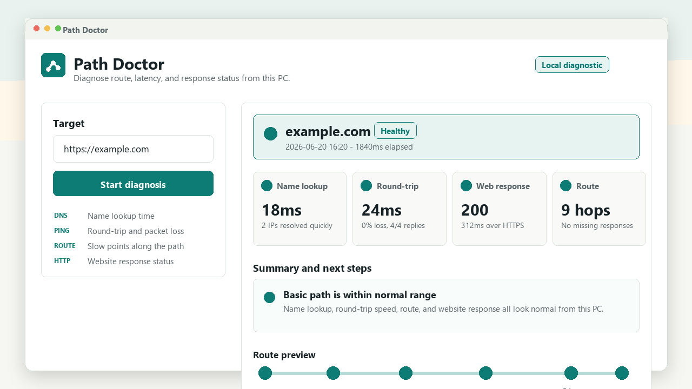
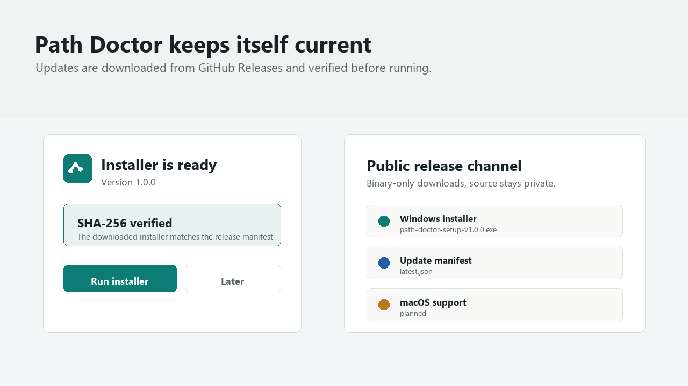

What it helps answer
Name lookup
See whether DNS is fast, slow, skipped, or failing.
Round-trip
Check response time and packet loss from this PC.
Route
Spot slow hops, missing replies, and filtered middle devices.
Web response
Check whether the website itself responds over HTTP/TLS.
Screenshots



Release status
Windows is available now. macOS support is planned through the same update channel. This first build is not code-signed yet, so Windows SmartScreen may show a warning.